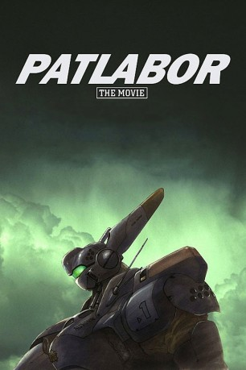

#2007 Patlabor 1 - The Movie
 
 IMDB-Wertung: 7.1 / 10
IMDB-Wertung: 7.1 / 10  Metascore: 0
Metascore: 0 
In Tokio kommt es zu einer merkwürdigen Reihung von Amokläufen einiger Arbeitsroboter. Die einzige Gemeinsamkeit dieser scheint ein neues Betriebssystem, das H.O.S – Hyper Operating System zu sein. Es stellt sich heraus, dass der Entwickler dieses Betriebssystems selbst für die Probleme verantwortlich ist: Er hat einen Virus programmiert, der sich schwer aus den Labors entfernen lässt und der die Amokläufe auslöst.
Jahr: 1989
Dauer: 100 Minuten
FSK:
Land: Japan Studio: Central Park MediaTonspuren: DD2.0 - ,
Untertitel: Deutsch,
Auflösung: 1080p (1920x1040) Größe: 7669 MB
Genre: Action, Thriller, Drama, Sci-Fi, Krimi, Animation/Trick, Mystery
Regisseur: Mamoru Oshii
Drehbuch: Kazunori Itô, Masami Yûki
Soundtrack: Kenji Kawai
Darsteller:
- Briony Glassco als Noa, 1995
 Roger Craig Smith als Gotoh, 2006
Roger Craig Smith als Gotoh, 2006 Megan Hollingshead als Nagumo, 2006
Megan Hollingshead als Nagumo, 2006- Lisa Enochs als Clancy, 2006
 Martin McDougall als Oota, 1995
Martin McDougall als Oota, 1995 Sam Riegel als Oota, 2006
Sam Riegel als Oota, 2006 Joe Ochman als Shinshi, 2006
Joe Ochman als Shinshi, 2006 Jason Miller als Hiromi, 2006
Jason Miller als Hiromi, 2006 William Roberts als Fukushima, 1995
William Roberts als Fukushima, 1995 Liam O'Brien als Kataoka, 2006
Liam O'Brien als Kataoka, 2006 Johnny Yong Bosch als Walla, 2006
Johnny Yong Bosch als Walla, 2006 Terrence Stone als Walla, 2006
Terrence Stone als Walla, 2006 Toshio Furukawa als Asuma
Toshio Furukawa als Asuma- David Jarvis als Asuma, 1995
 Doug Erholtz als Asuma, 2006
Doug Erholtz als Asuma, 2006- Mîna Tominaga als Noa
- Julie Ann Taylor als Noa, 2006
- Ryûnosuke Ôbayashi als Gotoh
- Peter Marinker als Gotoh, 1995
 Yoshiko Sakakibara als Nagumo
Yoshiko Sakakibara als Nagumo- Sharon Holm als Nagumo, 1995
- Yô Inoue als Clancy
- Tamsin Hollo als Clancy, 1995
- Michihiro Ikemizu als Oota
- Issei Futamata als Shinshi
- Ron Lepaz als Shinshi, 1995
- Daisuke Gôri als Hiromi
- Michael Fitzpatrick als Hiromi, 1995
 Shigeru Chiba als Shiba
Shigeru Chiba als Shiba- Edward Glen als Shiba, 1995
- Peter Doyle als Shiba, 2006
- Osamu Saka als Sakaki
- Blain Fairman als Sakaki, 1995
 Jamieson Price als Sakaki, 2006
Jamieson Price als Sakaki, 2006 Don Fellows als Jitsuyama, 1995
Don Fellows als Jitsuyama, 1995- Milton Lawrence als Jitsuyama, 2006
- Tomomichi Nishimura als Matsui
 Mac McDonald als Matsui, 1995
Mac McDonald als Matsui, 1995 Paul St. Peter als Matsui / Kaiho, 2006
Paul St. Peter als Matsui / Kaiho, 2006- Toshihiko Kojima als Kaiho
- Shinji Ogawa als Fukushima
 Bob Papenbrook als Fukushima, 2006
Bob Papenbrook als Fukushima, 2006- Kôji Tsujitani als Kataoka
- William Dufris als Kataoka, 1995
- Takahiro Hirai als Commander
 Fumihiko Tachiki als Worker
Fumihiko Tachiki als Worker- Tomohiro Nishimura als Cop
 Megumi Hayashibara als Meteorologist
Megumi Hayashibara als Meteorologist- Masamichi Satô als Tech
 Takehito Koyasu als Tech
Takehito Koyasu als Tech
Datei: X:\HD-Anime-Collections\Patlabor\Patlabor 1 - The Movie (1989, FSK, 1920x1040).mkv seit 22.09.2015
Festplatte: Gemischt-01+Anime
 Alle Filme aus Gruppe 'HD-Anime-Collections\Patlabor'
Alle Filme aus Gruppe 'HD-Anime-Collections\Patlabor'